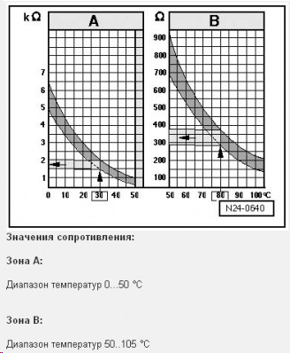
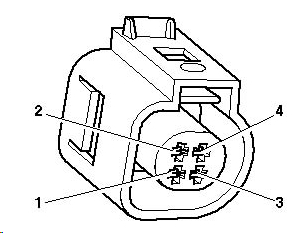

В одном 4-х контактном корпусе объединено два датчика: датчик температуры охлаждающей жидкости системы впрыска (контакты 1 и 3) и датчик температуры охлаждающей жидкости для панели приборов (контакты 2 и 4). Контакты между собой замыкать не должны. Контакты разных датчиков тоже никак между собой звониться не должны. Замыкание в датчике на приборку воспринимается как очень высокая температура:

